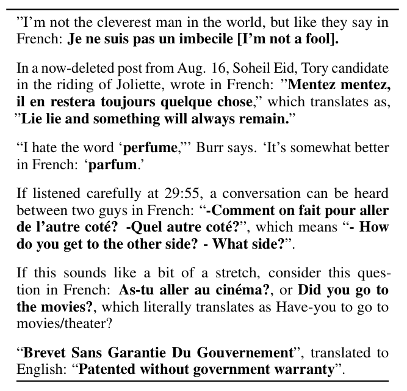
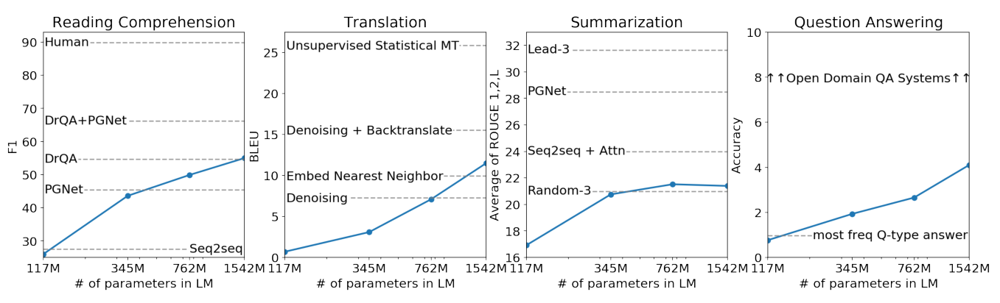
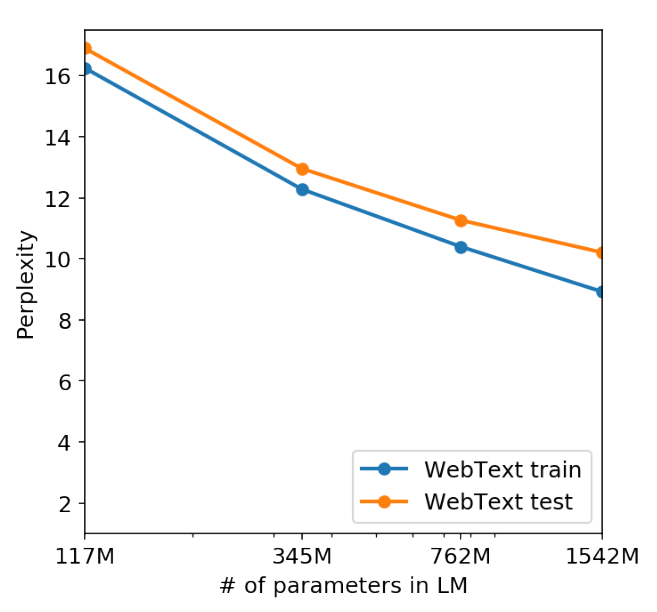

不教它任何任务，只让它读够杂的网页
Radford 等人 2019 年在 OpenAI 写的《Language Models are Unsupervised Multitask Learners》，就是 GPT-2。它押的是一个赌注：一个只学「猜下一个词」的模型，只要读的文字够杂、模型够大，就会顺带学会摘要、翻译、问答这些任务，不需要任务的标注数据，也不需要微调。他们用 800 万篇网页训练了四个尺寸的模型（最大 15.42 亿参数），在 8 个语言建模数据集里的 7 个上，没有训练就刷新了最好成绩；摘要、翻译、阅读理解、问答这四个真实任务上，也做出了超过简单基线的结果，只是离有监督的最好系统还差得远。
- 正文只走一条线：现有做法为什么走不远 → 作者的假说 → 为这个假说准备数据、分词和模型 → 怎么不微调就做题 → 每个结论对应哪个实验。只读每节的标题和每段第一句，也能串起来。
- 第 4 节（字节级 BPE）是这篇最有新意的工程细节，讲得最细；公式、符号表、完整结果表、概念解释、当时的背景，都在页尾的附录里，默认折叠，标明对应原文第几节。
- 小数字例子都验算过：为讲解设定的标「示意」，按原文规格估算的标「推算」。
- 模型的零件（自注意力、掩码、残差）在 004 Transformer 讲过，「猜下一个词」在 001 NPLM 讲过；006 GPT-1 是「先读书，再做题」，本篇是它的下一步：连「做题」那一步的训练也省掉。
1要解决的问题
到 2019 年，主流做法仍是：每个任务收集一套标注数据，训练一个专门的模型。这样的模型在自己的数据集上很强，但原文把它们叫作「窄专家」：换一种输入分布，或者换一种任务写法，表现就会不稳。
让一个模型同时学很多任务，也行不通
自然的想法是多任务学习：一个模型同时学很多任务。原文的看法是：把每一对（数据集，训练目标）当作一个训练样本，到当时为止，最有野心的两次多任务尝试也只凑了 10 对和 17 对，而现有的方法要学出能泛化的函数，通常需要成百上千个样本。靠人一个个造数据集、设计目标，很难扩到那个规模。
所以需要另一条路：让模型从现成的、不用人专门去造的文字里学任务。下一节是作者的想法。
2核心假说：任务就写在文字里
作者的想法是：网页上本来就有各种任务的示范，不需要人去造。比如下面这几段，是作者在训练数据里找到的，一句话旁边跟着它的法文，天然就是一条翻译的示范。

如果模型读的文字够多、够杂，它在猜下一个词时就会碰到各种任务的示范：想猜对一句法文引语后面的英文翻译，就得会翻译；想猜对文章后面的「TL;DR:」，就得会概括。所以原文的假说是：一个容量够大的语言模型，为了更好地猜下一个词，会开始学会这些任务，不管示范是怎么来的。
任务怎么写进一个模型：把任务也放进条件里
普通的语言模型学的是 p(下一个词 | 前文)。原文把它改写成 p(输出 | 输入, 任务)：任务也是条件的一部分，而且是用自然语言写的，比如「translate to french : cheese =」。模型的结构不需要为任务改动，不同的任务只是不同的前文。
关键就在图 3：监督训练只在答案那一格算损失，而语言模型每一格都在算，所以有监督的目标是无监督目标的一个子集。原文据此推断：无监督目标的最优解，同时也是监督目标的最优解，所以只要能把猜词练到足够好，任务就会被顺带学会。这是一个假说：它把问题变成「实践里能不能把无监督目标优化到足够好」，原文没有证明它，而是在后面用实验来检验。精确的写法见附录 A。
3数据：WebText，够杂、够大、质量过得去
假说想成立，前提是文字里真的有各种任务的示范，所以数据要尽可能多领域、多语境。以往的语言模型大多只用单一领域的文本：新闻、维基百科、小说。Common Crawl 这类整个网页的抓取，量比它们大几个数量级，但原文引用的前人经验是质量问题明显，很多文档的内容基本读不懂。
作者的办法是借别人的眼睛做一次筛选：只收 Reddit 上获赞（karma）至少 3 个的外链。这个数字可以看作「有别的用户觉得这个链接有意思、有用或好笑」的粗略信号，人先替他们筛过一遍，成本很低。
这份数据最后是 800 万篇文档、40GB 文本，覆盖的领域和写法比单一来源杂得多。第 7 节会看到，里面确实混着一些「天然的示范」，哪怕作者专门滤掉了非英文网页，模型也从里面学到了一点翻译。
4怎么把文字变成数：字节级 BPE
数据有了，还要把任意文字切成模型能读的单位，也就是分词。这一步决定了模型能读什么、能写什么，是这篇最有新意的工程细节，下面讲得细一些。
三种最直接的切法，各有毛病
按词切最省长度，但词表是有限的，生僻词、人名、拼写错误都会变成 <UNK>，模型既读不了，也写不出。按字符切不会有「没见过」，可是 Unicode 的符号太多，词表大。按字节切最干净：任何文字都能写成字节，基础符号只有 256 个。不过原文也指出，当时直接做字节级的语言模型，在大规模数据集上比不过词级模型，作者在 WebText 上自己试，也看到了同样的差距。
BPE：折中的办法，从小单位开始，反复合并最常见的一对
BPE（字节对编码）正是词和字符之间的折中，做法很简单：起点是最小的单位；数一数训练文本里哪一对相邻的符号出现得最多，把它们合并成一个新符号，加进词表；再数，再合并，一直到词表够大。常见的词会逐渐合并成一个整体，罕见的词就拆成几块。原文的说法是：它在「常见序列用词级输入、罕见序列用字符级输入」之间做插值。
把起点换成字节：不再有「没见过」，也不用预处理
原文做的是把 BPE 的起点从字符换成字节：基础词表只有 256 个字节，其余的都靠合并长出来。这样模型能给任意字符串算概率，不管它有没有大小写、有没有奇怪的符号、是不是别的语言，所以不需要大小写转换、标点切分、<UNK> 这些前置处理。
还要打一个补丁：禁止跨类别合并
直接把 BPE 用在字节序列上，合并只看出现次数，会出一个问题：常见的词会带着各种标点出现，比如 dog、dog.、dog!、dog?，每一种都有足够多的出现次数，各自合并成一个 token。原文的说法是，这会让有限的词表和模型容量分配得不划算。
作者的办法是：不允许跨字符类别合并（比如字母和标点不会被合并到同一个 token 里）。只有一个例外：空格可以和字母合并。原文说这个例外能明显提高压缩效率，而让词被切碎的情况只增加一点点。
最后的词表是 50,257 个 token（原文数字）。细节（UTF-8 的编码、词表怎么拆成基础字节和合并出来的部分）见附录 B。
5模型：放大的 GPT-1，只改了几处
有了分词，模型本身几乎不用另外设计：它沿用 006 GPT-1 的仅解码器 Transformer（带掩码的自注意力加前馈网络，零件见 004），主要是把它放大。原文列出的改动只有这几处：
- 层归一化（LayerNorm）挪位置：从每个子块的后面，挪到每个子块的输入端（后来常叫 Pre-LN）；最后一个自注意力块之后，再多加一个层归一化。
- 残差层的初始化：残差层的权重在初始化时乘以 1/√N，N 是残差层的个数，目的是让层数多了以后，残差路径上累加的东西不要越积越大。
- 词表扩到 50,257，上下文从 512 扩到 1024 个 token，批量大小用 512。
原文没有解释层归一化为什么这样挪（常见的解释见附录 C，那不是原文的话）。真正拉开差距的是规模：四个尺寸，最小的和 GPT-1 一样大，最大的参数多了一个数量级。
| 参数量 | 层数 | 宽度 d | 对应 |
|---|---|---|---|
| 117M | 12 | 768 | 和 006 GPT-1 同规模 |
| 345M | 24 | 1024 | 相当于 008 BERT 的最大模型 |
| 762M | 36 | 1280 | |
| 1542M | 48 | 1600 | 最大的，叫 GPT-2 |
表中数字出自原文 Table 2，每一档的参数量是前一档的 2 到 3 倍左右。我按层数和宽度估算过参数量，和原文标称的数字有一点出入（附录 E）。原文还说，四个模型都还欠拟合 WebText：训练时间再长一点，留出的 WebText 上的困惑度还在继续下降。精确的计算见附录 E。
6不微调，怎么做题：把任务写成前文，让模型接着写
模型训练完以后，一个参数都不再改，做题的全部办法就是写什么样的前文，再看它接着写出什么。这叫零样本：对任务不做任何训练。（翻译和问答的前文里放了几对示例，只用来告诉模型「格式是什么」，不更新参数；这是原文的口径。）下表是原文给每类任务写的办法：
| 任务 | 前文怎么写 | 怎么取答案 |
|---|---|---|
| 摘要（CNN / Daily Mail） | 文章后面加上 TL;DR: | 随机采样（top-k，k = 2）生成 100 个 token，取前 3 句 |
| 翻译（WMT-14） | 前面放几对 英文句 = 法文句 的示例，最后写 英文句 = | 贪心解码，取生成的第一句 |
| 阅读理解（CoQA） | 文档 + 前面的问答记录 + 最后一个 A: | 贪心解码 |
| 问答（Natural Questions） | 前面放几对问答作示例，让模型知道答案要写得短 | 原文没写解码方式 |
| 完形填空（CBT） | 把每个候选词填进空格，不另写提示 | 选让整句概率最高的候选 |
| 代词消解（Winograd） | 把代词换成每个候选的指代，不另写提示 | 选让概率更高的那种替换 |
表里出现了两种取词的办法。贪心解码：每一步都取概率最大的词，同样的前文永远写出同样的东西。top-k 随机采样：只在概率最高的 k 个词里，按重新归一后的概率抽一个。原文说 k = 2 的采样「减少重复，比贪心解码更容易写出概括性的摘要」。
注意没有一种办法需要训练：给摘要加 TL;DR:，给翻译加示例，都只是换前文。精确的写法（条件概率和采样）见附录 A。
7证据：它到底做到了多少
假说要靠实验检验，下面每个结论后面都跟着对应的实验。先说总的：语言建模上赢得最漂亮；真实任务上只是「有」，离有监督的最好系统还差得远。
结论一：不做任何训练，在 8 个语言建模数据集里的 7 个上刷新了最好成绩
这 8 个数据集（LAMBADA 和 CBT 各用了两种指标，一共 10 项）上，此前最好的成绩都是在各自的训练集上训练或微调出来的，GPT-2 一次都没训练。除了 1BW，其余全部刷新（原文 Table 3）。下图挑了四个数据集，看四个尺寸的 GPT-2 和此前最好成绩的关系：
看这张图有两个读法。横着看，同一个数据集里，模型越大成绩越好，几乎单调；小模型赢不了，PTB 上 117M 和 345M 都还比此前最好成绩差，要到 762M 才超过。所以「GPT-2 赢了」要看规模，不是随便一个 WebText 模型都能赢。竖着看，提升很不均匀：小数据集提升大（PTB 46.54 → 35.76，WikiText2 39.14 → 18.34），要靠长上下文才猜得准的 LAMBADA 提升最惊人（困惑度 99.8 → 8.63），大数据集 WikiText103 只是 18.3 → 17.48。至于为什么，原文对前两类没有解释，我的推测是：小数据集上专门训练的模型见得少，而 GPT-2 带着 40GB 的阅历来，这是推测，原文没有做消融实验去拆。
输掉的一项是 1BW（21.8 对 42.16）。原文的猜测是两个原因叠加：它是最大的数据集，而且预处理最具破坏性，句子级的打乱抹掉了所有长程结构。
一个提醒：Table 3 里的数字只能在同一行内比。困惑度按词算还是按字节算、数据集有没有被预处理过，口径各不相同，不同数据集之间不能直接比大小。十项的完整数字见附录 F。
结论二：要读长文才猜得准的任务，进步最大
LAMBADA 要猜一个句子的最后一个词，而人至少要读 50 个 token 的上下文才猜得出：GPT-2 把困惑度从 99.8 降到 8.63。准确率这一项有个细节：原文发现，模型猜的词大多是合理的续写，但不是合理的「句末词」；加上停用词过滤（近似地加上「必须是句子的最后一个词」这条约束）之后，准确率从 52.66% 升到 63.24%，Table 3 里用的是后者，此前最好成绩是 59.23%。
CBT 是选词题，GPT-2 在名词和命名实体两类上分别做到 93.30% 和 89.05%，此前最好成绩是 85.7% 和 82.3%。注意这里报告的是验证集：测试集里有一本书（《丛林之书》）出现在了 WebText 里，所以作者改报没有明显重叠的验证集。Winograd 是代词指代的常识题，GPT-2 做到 70.70%，比此前最好高 7 个百分点；但这个数据集只有 273 道题，原文建议读相关文献，谨慎看待这个数字。
结论三：摘要、翻译、阅读理解、问答四个真实任务，都能做，但离有监督的最好系统差得远
- 阅读理解（CoQA）：开发集上 55 F1，匹配或超过 4 个基线系统里的 3 个，而且没有用那 12.7 万多条人工标注的问答。有监督的最好系统（基于 BERT）已经接近人类的 89 F1。原文看了它的答案和错误：GPT-2 常用简单的检索式启发，比如遇到 who 的问题，就从文档里挑一个人名当答案。
- 摘要（CNN / Daily Mail）：加 TL;DR: 的 R-AVG 是 21.40，只比「随机挑 3 句」的 20.98 高一点，比「直接取文章开头 3 句」的 31.55 低得多，比最好系统的 32.75 低 11 分多。去掉 TL;DR: 这个提示，成绩掉到 15.03（掉了 6.4 分）。原文说它生成的东西「看起来像摘要」，但常抓最近的内容，或者把具体细节搞混。
- 翻译（WMT-14）：法译英 11.5 BLEU，比几个无监督翻译基线好，但比当时最好的无监督方法（33.5）差得多；英译法 5 BLEU，比「逐词查双语词典替换」略差。作者专门滤掉了非英文网页，用语言检测器在 WebText 里也只检出约 10MB 的法文，大约是常规无监督翻译所用法文语料的五百分之一，所以原文说这个结果连他们自己也觉得意外。
- 问答（Natural Questions）：精确匹配 4.1%。最小的模型没有超过「按题型返回最常见答案」这个简单基线的 1.0%，而 GPT-2 答对的题数是最小模型的 5.3 倍。它对自己最有把握的 1% 的题，准确率有 63.1%，说明它的置信度比较可信；但和结合了检索的开放域问答系统（30% 到 50%）相比，仍然差得很远。
结论四：容量越大越好，而且还没到头
把四个任务的成绩随模型参数量画出来，就是原文的 Figure 1：横轴是对数刻度，曲线大致是一条向上的直线，原文说「随容量对数线性地提高」。原文在第 6 节里还说：问答和翻译只有在容量足够大时，才超过平凡的基线。

还有一点：原文说四个模型都还欠拟合 WebText，训练得更久，留出集上的困惑度还会继续下降。也就是说，这张图上的最大模型，并不是这条路的终点。
结论五：模型是在泛化，不是在背答案
一个自然的怀疑：WebText 有 40GB，评测集里的内容会不会早就在里面，模型只是把它背下来了？原文第 4 节做了检查：把 WebText 训练集里所有的 8-gram（连续 8 个词的片段）装进一个 Bloom 过滤器（一种省空间的集合，可能误报，但不会漏报），再数每个评测集里，有多大比例的 8-gram 也出现在 WebText 训练集里；作为对照，同样数一数评测集和它自己的训练集的重叠。
| 8-gram 重叠比例（%） | PTB | WikiText-2 | enwik8 | text8 | WikiText-103 | 1BW |
|---|---|---|---|---|---|---|
| 评测集与它自己的训练集 | 2.67 | 0.66 | 7.50 | 2.34 | 9.09 | 13.19 |
| 评测集与 WebText 训练集 | 0.88 | 1.63 | 6.31 | 3.94 | 2.42 | 3.75 |
表中数字出自原文 Table 6。六个数据集里，评测集与 WebText 的重叠平均是 3.2%，低于它们与自己训练集的平均重叠 5.9%：按这个对照，GPT-2 的训练集和评测集重叠得并不比一个在该数据集上正常训练的模型更多。原文的结论是：重叠对成绩有小而稳定的好处，但没有大到解释这些结果。

不过记忆不是完全没有。原文附录里有个例子：葛底斯堡演说在 WebText 里出现了约 40 次，只给模型开头一句半，用 argmax 解码，它就能背出全文；换成带随机性的采样，100 到 200 个 token 内就会走偏。原文的 Figure 5 还显示，模型生成的文字与训练集重叠的比例，比真实的留出文章还低（真实留出文章的中位数是 2.6%）。
作者自己的结论
原文第 6、7 节的意思是：一个容量够大、语料够杂的语言模型，不需要显式的监督，就能学会数量惊人的任务；在阅读理解上，零样本的结果已经能和有监督的基线竞争，在摘要上只是初级的，在实际使用上还「远远不能用」。作者在最后也坦率地说，不确定更多的数据和容量，能不能弥补 BERT 展示出来的、单向表示的低效。
8局限和后来
这篇的结论是「有」，不是「好」，作者自己也这么看，所以这些局限不是后人挑出来的：
- 能做，但不好用：摘要只是初级，翻译和问答要容量足够大才超过基线，作者自己说离实用还远。
- 只能从左往右读：作者不确定更大的数据和容量能不能弥补单向表示的低效。后来的 008 BERT 选了另一条路：双向编码器，加上微调。
- 靠放大，不靠方法：这篇的核心证据是「模型越大越好，而且还没到头」。后来 011 把这条线推到 1750 亿参数，并且把前文里放几个示例变成主角；018 则要解决「模型能做，但不一定听话」。
附录 G 把前后篇的关系理了一遍，附录 H 记了几处我没有核实清楚的地方。
附录 · 想深入再看
下面每一块都默认折叠，标题里写明了对应的原文章节；正文用不到它们。其中标「我补充」的，是原文之外我加的说明，标「待核实」的是我没有核对清楚的。
A · 公式和符号表（原文第 2 节）
语言建模：把一串符号的概率，拆成一个个「猜下一个」的乘积
| 符号 | 是什么 |
|---|---|
| x = (s1, …, sn) | 一段文字，切成 n 个符号（token） |
| p( si | s1, …, si−1 ) | 看完前 i−1 个符号后，下一个是 si 的概率；训练就是让它对真实文字越大越好 |
把任务也放进条件里（原文第 2 节的写法）：
原文的论证：监督学习的目标，等于只在「输出」那一部分计算的同一个语言建模目标，所以无监督目标的全局最优解，同时也是监督目标的全局最优解。这个论证说的是最优解；原文紧接着承认，问题变成了「实践中能不能把无监督目标优化到收敛」，这要靠实验回答，而不是靠这条论证。
残差层的初始化缩放（原文 2.3 节）：残差层的权重在初始化时乘以 1 / √N，N 是残差层的个数。
示意：如果 48 个块里每个块有 2 次残差相加（注意力和前馈各一次），N 就是 96，缩放系数约为 1 / √96 ≈ 0.102。N 怎么数，原文没有说明，这个例子只是为了让数量级有个感觉（待核实）。
困惑度和每字节比特数，是同一个概率的两种单位
示意：一段 5000 字节的文字，共 1000 个词，模型一共花了 4650 比特。按字节算，每字节 4650 / 5000 = 0.93 比特（BPB）；按词算，每个词 4.65 比特，困惑度是 24.65 ≈ 25.1。同一个模型，换个单位数字就差很多，所以 Table 3 里不同数据集的数字不能互相比较，也不能和别的论文里换了口径的数字直接比。
top-k 采样（原文 3.6 节）：只保留概率最高的 k 个词，把它们的概率重新归一：p′(w) = p(w) / Σv∈前 k 名 p(v)，再按 p′ 抽一个。图 8 的例子里 k = 2：p′(mat) = 0.40 / 0.65 ≈ 0.615。
B · 字节级 BPE 的细节（原文 2.2 节）
UTF-8：不同的字符，占不同数量的字节
| 字符 | 字节数 | 字节值（0–255） |
|---|---|---|
| d（英文字母） | 1 | 100 |
| é（带音标的拉丁字母） | 2 | 195 169 |
| 你（汉字） | 3 | 228 189 160 |
整句 I like dogs! 写成字节是 12 个数：73 32 108 105 107 101 32 100 111 103 115 33（32 是空格）。BPE 就是在这样的数的序列上，数相邻的一对谁出现得最多，再合并。起点序列比词级长得多，而每合并一次，序列就变短一点，所以 BPE 的合并同时也是一种压缩（我补充）。
为什么不用字符，而要用字节：原文说，通常的 BPE 实现是在 Unicode 码点上做，要把 Unicode 的全部符号都放进基础词表，会超过 13 万，而常见的 BPE 词表一般只有 3.2 万到 6.4 万；字节级版本只需要 256 的基础词表。
合并规则：不允许跨字符类别合并；空格是唯一的例外，原文说这样压缩效率明显提高，而词被切成多个 token 的情况只增加一点点。原文没有列出类别具体怎么划分。
词表 50,257 怎么来：原文只给了总数。后来开源的实现里，它由三部分组成：256 个基础字节、50,000 次合并、1 个文本结束符，加起来正好是 50,257。这是来自开源代码的说法，不是原文的，我没有核对过（待核实）。
对不同语言的影响（我补充，推断，待核实）：训练文字绝大部分是英文，英文里的常见片段会被合并成较长的 token；中文这类每个字占 3 个字节的文字，如果没有被足够多地合并，往往会被切得更碎，同样一句话要用更多 token。
C · 几个概念：零样本、评价指标、去分词器、Pre-LN、Bloom 过滤器
零样本、微调、少样本：006 GPT-1 是预训练加微调，每个任务要更新参数；本篇是零样本，不更新任何参数，任务只写在前文里（翻译和问答的前文里放了几对示例，只用来示范格式，原文仍称零样本）；011 把「在前文里放几个示例」做成了核心，叫少样本。
| 指标 | 是什么 | 方向 |
|---|---|---|
| 困惑度（PPL） | 模型猜下一个词，平均有多「犹豫」，等价于每词比特数取 2 的幂 | 越低越好 |
| BPB / BPC | 每个字节 / 每个字符需要的比特数（enwik8 用字节，text8 用字符） | 越低越好 |
| ACC | 答对的比例 | 越高越好 |
| F1 | 答案和标准答案的词的重合程度，精确率和召回率的调和平均（CoQA 用） | 越高越好 |
| ROUGE（R-1 / R-2 / R-L） | 摘要和标准摘要的重合程度：单个词、相邻两个词、最长公共子序列；R-AVG 是三者的平均（比如 Bottom-Up Sum 的 (41.22 + 18.68 + 38.34) ÷ 3 = 32.75） | 越高越好 |
| BLEU | 译文和参考译文的短语重合程度（翻译用） | 越高越好 |
| 精确匹配（EM） | 答案和标准答案一字不差的比例（Natural Questions 用） | 越高越好 |
可逆的去分词器（原文 3.1 节）：评测数据集大多带着预处理留下的痕迹，比如 PTB 风格的分词（标点前面多一个空格）、被打乱的句子、<UNK> 之类的占位符；这些在 WebText 里很罕见，原文说 <UNK> 在 400 亿字节里只出现了 26 次。作者先用可逆的去分词器把这些痕迹去掉再评测；因为可逆，仍然能算出原数据集的对数概率。原文说这让 GPT-2 的困惑度改善了 2.5 到 5。
Pre-LN（我补充，不是原文的解释）：原来的 Transformer（004）把层归一化放在残差相加之后；挪到子块的输入端后，残差路径是一条没有被归一化挡住的直通线，常见的说法是深层的模型因此更好训练。原文只说了「挪到了输入端」。
Bloom 过滤器（原文第 4 节）：一种省空间的集合。问「这个元素在不在」，它回答「可能在」或者「一定不在」，会有少量误报，但不会漏报。原文把误报率的上界设在 1 / 108，并且先把字符串归一化（全部小写、只留字母数字、单词间一个空格）再装进去，目的是多检出一些重叠（召回优先），所以 Table 6 里的数字里也包含很多常见短语，并不都是真正的泄漏。
D · 当时的背景（原文第 1、2 节）
主流做法的演变（原文引言的叙述）：先是把预训练好的词向量作为输入，再是迁移循环网络的上下文表示，近来的工作则表明，任务专用的结构已经不是必须，把很多层自注意力迁移过去、再做监督微调就够了（对应 006 GPT-1、008 BERT 一类）。但这条路径上仍然需要每个任务的监督训练，本篇要问的是：连这一步也能去掉吗？
多任务学习：把每一对（数据集，目标）当成一个训练样本，当时最大的两次尝试只有 10 对和 17 对，离「成百上千」差得远（见图 2）。
数据：以往的语言模型多在单一领域的文字上训练（新闻、维基百科、小说）；Common Crawl 这类网页抓取量大但质量有问题，原文引用了前人的经验，说其中大量文档的内容基本读不懂。WebText 是在这两者之间的折中：量大，又用 Reddit 的赞做了一层筛选。
发布方式（原文之外的事实，待核实）：2019 年 2 月 OpenAI 公开这项工作时，出于对滥用（比如假新闻）的担心，只放出了最小的模型，其余尺寸之后分阶段放出，直到全尺寸版本，这件事引起了广泛争论。原文本身只在脚注 5 说「小模型的初步代码可以下载」。
E · 训练设置和参数量（原文 2.3 节、Table 2）
原文写了的：上下文 1024 个 token，批量大小 512，词表 50,257。每个模型的学习率是手动调的，以 WebText 里留出的 5% 样本上的困惑度最好为准。所有模型都还欠拟合 WebText。
原文没写的：用的优化器（是不是 005 的 Adam 没有说）、训练多少步、用了什么硬件，我都没有在原文里找到（待核实）。
参数量的推算（我按原文的层数和宽度估算，原文没给推导）：每层约 12d²（注意力 4d²，前馈 8d²，004 里推过），再加词嵌入 50,257 × d 和位置嵌入 1024 × d，忽略偏置和层归一化。
| 原文标称 | 层数 | 宽度 d | 推算参数量 |
|---|---|---|---|
| 117M | 12 | 768 | 约 124M |
| 345M | 24 | 1024 | 约 355M |
| 762M | 36 | 1280 | 约 773M |
| 1542M | 48 | 1600 | 约 1557M |
推算值和原文标称有约 1% 到 6% 的出入。后来 OpenAI 开源仓库里的模型名改成了 124M / 355M / 774M / 1558M，和推算更接近（原文之外，待核实）；原文里一直用的是 117M / 345M / 762M / 1542M，出入的原因原文没有说明。
F · 完整的结果表（原文 3.1 节、3.6 节、3.8 节，Table 3、4、5）
Table 3：零样本的语言建模，四个尺寸 + 此前最好成绩（此前最好成绩都在各自的训练集上训练或微调过；加粗是 GPT-2 最大模型）
| 数据集（指标） | 此前最好 | 117M | 345M | 762M | 1542M |
|---|---|---|---|---|---|
| LAMBADA（PPL ↓） | 99.8 | 35.13 | 15.60 | 10.87 | 8.63 |
| LAMBADA（ACC ↑） | 59.23 | 45.99 | 55.48 | 60.12 | 63.24 |
| CBT-CN（ACC ↑） | 85.7 | 87.65 | 92.35 | 93.45 | 93.30 |
| CBT-NE（ACC ↑） | 82.3 | 83.4 | 87.1 | 88.0 | 89.05 |
| WikiText2（PPL ↓） | 39.14 | 29.41 | 22.76 | 19.93 | 18.34 |
| PTB（PPL ↓） | 46.54 | 65.85 | 47.33 | 40.31 | 35.76 |
| enwik8（BPB ↓） | 0.99 | 1.16 | 1.01 | 0.97 | 0.93 |
| text8（BPC ↓） | 1.08 | 1.17 | 1.06 | 1.02 | 0.98 |
| WikiText103（PPL ↓） | 18.3 | 37.50 | 26.37 | 22.05 | 17.48 |
| 1BW（PPL ↓） | 21.8 | 75.20 | 55.72 | 44.575 | 42.16 |
CBT-CN 的最大模型（93.30）略低于 762M（93.45），原表如此，不是抄错。
Table 4：CNN / Daily Mail 摘要（ROUGE F1）
| 系统 | R-1 | R-2 | R-L | R-AVG |
|---|---|---|---|---|
| Bottom-Up Sum（有监督，当时最好） | 41.22 | 18.68 | 38.34 | 32.75 |
| Lede-3（取开头 3 句） | 40.38 | 17.66 | 36.62 | 31.55 |
| Seq2Seq + Attn | 31.33 | 11.81 | 28.83 | 23.99 |
| GPT-2（加 TL;DR:） | 29.34 | 8.27 | 26.58 | 21.40 |
| Random-3（随机挑 3 句） | 28.78 | 8.63 | 25.52 | 20.98 |
| GPT-2（不加提示） | 21.58 | 4.03 | 19.47 | 15.03 |
去掉提示后掉了 21.40 − 15.03 = 6.37 分（原文说约 6.4 分）。
Table 5（Natural Questions）：原文列出了 GPT-2 最有把握的 30 个回答，概率从 83.4% 到 45.2%；正文用到的汇总数字（4.1%、63.1%、5.3 倍、基线 1.0%）都在 3.8 节的文字里。
G · 后来的发展和前后篇衔接（原文之外）
继承自：004 Transformer（整套零件，只取解码器那一半；跨篇的梳理见Transformer 特辑）；006 GPT-1（仅解码器加猜词预训练，本篇把它放大并去掉微调）；001 NPLM（用前文猜下一个词）；002 Seq2Seq、003 注意力（逐词生成）；005 Adam（常用的优化器，但原文没说用没用）。
对 006 的推进：把「预训练 + 微调」推到「只预训练」：用够杂的数据、更大的模型、自然语言写成的前文，代替微调；同时引入字节级 BPE，让输入不再需要预处理。
被改进或取代的部分（我的归纳，待核实）：「任务写在前文里」这条线后来被 011 推向前台，从零样本发展到在前文里放几个示例；单向读法由 008 的双向编码器补上；让模型听话，要靠 018。
留下的问题：单向表示是否有天花板（→ 008）；规模该多大、数据该多大（→ 009、010）；放几个示例会怎样（→ 011）；模型能做，但不一定听话（→ 018，经 015、016 铺垫）。
H · 疑点和没有核实的地方
- N 是什么：1 / √N 里的「残差层个数」，原文没有给定义，我的示例按「每块两次残差相加」估的。
- 词表 50,257 的拆法：256 + 50,000 + 1 来自开源代码，不是原文。
- 参数量的出入：我推算的 124M / 355M / 773M / 1557M 和原文标称的 117M / 345M / 762M / 1542M 有出入，原文没有说明原因；后来开源仓库改用的命名（124M 等）在原文之外，待核实。
- Pre-LN 的原因：「更好训练」是常见的解释，不是原文给的。
- Figure 4：只从图上看出趋势，读不出准确的训练 / 留出困惑度。
- 5.3 倍：原文说 GPT-2 答对的题数是最小模型的 5.3 倍，图 10 里最小模型的 0.77% 是我用 4.1% ÷ 5.3 推算出的，和「没超过 1.0%」不矛盾，但不是原文给的数字。
- 为什么小数据集和长依赖数据集提升大：原文只报告了现象，没有做消融实验，正文里的说法是我的推测。
- 训练细节：优化器、步数、硬件，原文里没有找到；分阶段发布的经过在原文之外，待核实。